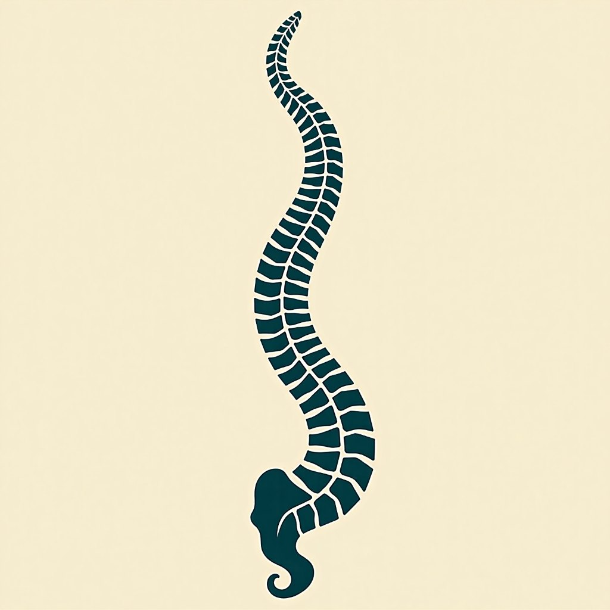
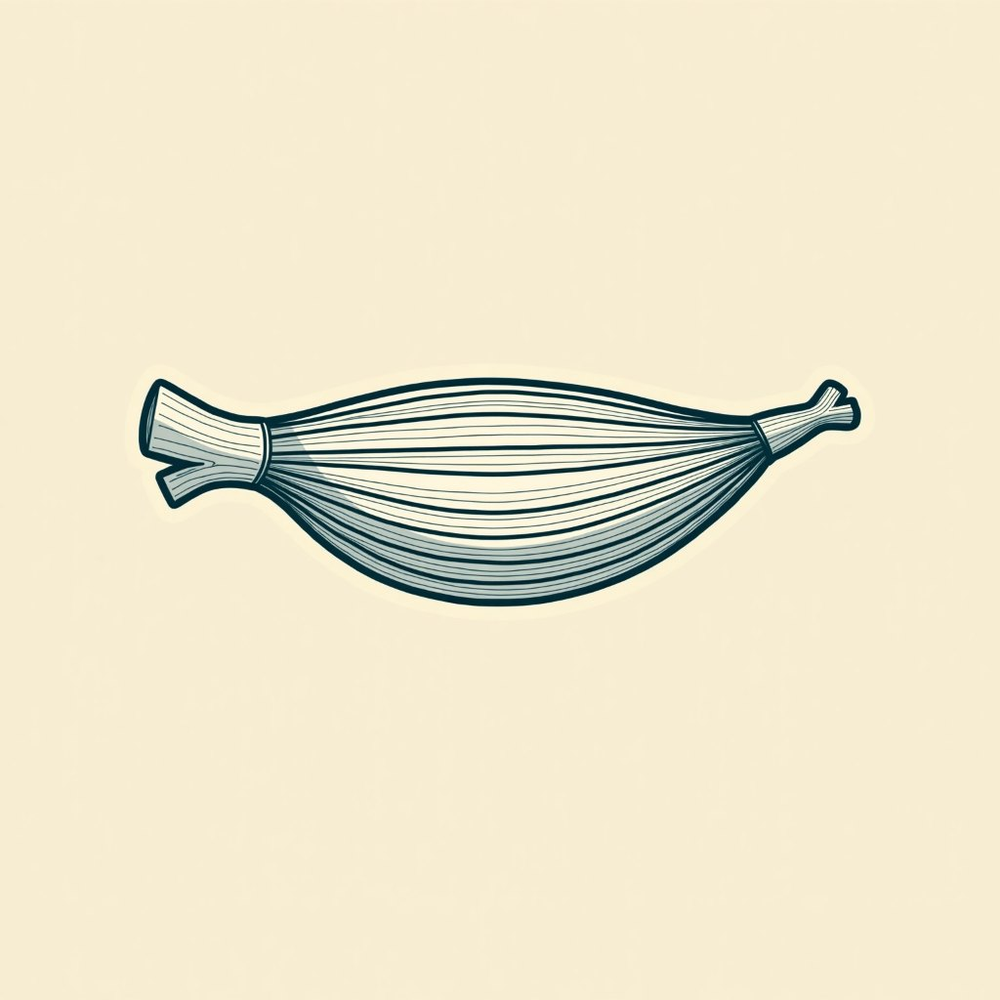
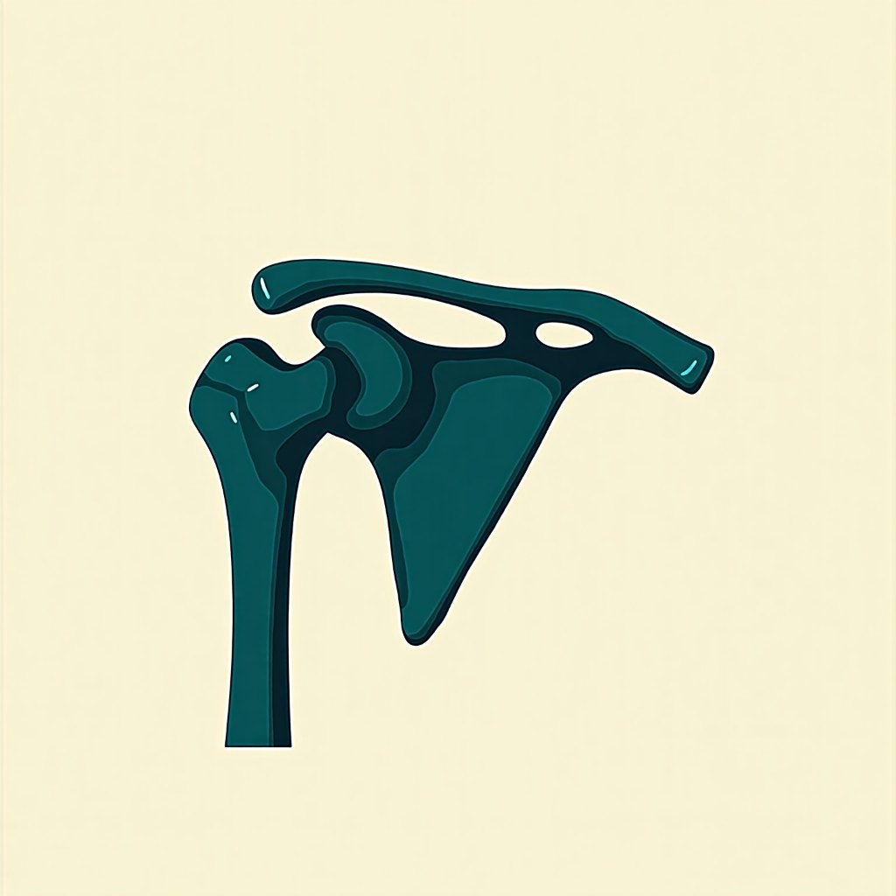

Assessment method
Applied Kinesiology in Roseville
Applied kinesiology is a hands-on assessment method. We test how your muscles respond, then use what we find to work out where the problem is actually coming from. It is used here alongside standard diagnosis, never instead of it, for people whose pain has not resolved with conventional treatment or with standard chiropractic.
Before you got here
You have probably already done the sensible things
Most people arrive here having already worked the standard pathway.
- You saw your doctor.
- You had imaging.
- You were given anti-inflammatories, then a course of physical therapy, and when that did not hold you were offered a referral to an orthopaedic specialist.
None of that is wrong. For a great many problems it is exactly right, and if that is what you need, that is what you should have. But the pathway is built to treat the site of the pain and then refer onward. If the shoulder hurts, the shoulder gets the attention. What it is not built to do is spend a visit asking why the shoulder is the part carrying the load in the first place. That is the step this practice adds, and it is the only reason to come here.

The mechanism
Muscle testing, in plain terms
Manual muscle testing is used here as a clinical assessment. You hold a limb in a set position, gentle pressure is applied, and the way the muscle responds is noted. Repeated across the body and read together with your history, a physical exam and any imaging you already have, the pattern shows where to look next. It narrows the search. It is not a scan, and on its own it is not a diagnosis.
That matters most to the patient this practice sees most often: someone who has already been through a doctor, a course of physical therapy, or an adjustment-only chiropractic plan, and got limited results. Difficult cases where others have fallen short are the ordinary work here rather than the exception. The nearest practice offering this assessment is twelve miles away; within three miles there is none.

A course of care
What a plan looks like
A first visit starts with your history and what you have already tried, then a physical examination and the applied-kinesiology assessment.
Your history
What brought you in, and what you have already tried.
Physical examination
The standard examination, done first and done properly.
The assessment
The applied-kinesiology assessment, read alongside the rest.
A plan
Built from what those found, out of the tools this practice actually has.
From what that finds, a plan is put together out of the tools this practice actually has. Most plans use more than one of them.
You are reassessed as you go. The same tests that set your baseline are repeated, so the plan answers to what has changed rather than to a schedule fixed on day one. If a course of care is not moving, you will hear that from Dr. Van Wagenen rather than be booked further into it, and anything sitting outside this scope is referred on. What happens on a first visit.
The boundary
This is an assessment method, not a diagnosis.
The limits, stated plainly
The profession's own governing body sets the boundary: applied kinesiology procedures are not intended to be used as a single method of diagnosis, and applied kinesiology examination should enhance standard diagnosis, not replace it. FDA clearance of a device means cleared for a stated use, not proof of results.
The wedge
The method and the instruments, under one roof
The assessment is only half of what makes this practice unusual locally. The other half is the equipment, and locally the two almost never sit together.
| Published capability | Nearby clinics that own the instruments | The regional practice with the deepest AK credentials | This practice |
|---|---|---|---|
| Applied-kinesiology capability | None published | Published | Published |
| Laser therapy | Published | None published | Published |
| PEMF therapy | Published | None published | Published |
| Both, under one licensed practitioner | No | No | Yes |
That is a claim about capability, not a boast, and you can check either half of it yourself. The full treatment stack.
What we do not claim
Practitioners with deeper applied-kinesiology board credentials practise in this region. This practice holds none, says so plainly, and competes on what you can check.
Before you book
Common questions
Does muscle testing tell you what is wrong with me?
No. It is an assessment that narrows where to look, and it runs with a medical work-up rather than in place of one. It does not diagnose disease, it does not detect allergies, and it does not replace a medical work-up.
Do I need to stop seeing my doctor?
No, and you should not. Keep your physician, keep medication decisions with them, and bring your imaging and reports here. Care goes better when both sides are working from the same picture.

Who is this not for?
Anyone with an emergency or a red flag. Chest pain, a suspected fracture, sudden loss of strength or sensation, unexplained weight loss, or fever alongside severe back pain all need urgent medical assessment first. This practice performs no surgery and prescribes no medication, and it makes no diagnostic claim for allergies, ADHD, asthma or ear infections. Who this is for.
How will I know whether it is working?
By the same tests that set your baseline, repeated. The practice publishes no session count and no timeframe, because the honest answer depends on what the assessment finds in your case. Ask at the first visit and you will get a straight answer. Is muscle testing legitimate · Conditions treated.
Start with the assessment, or call and ask whether this is the right place to start. Appointments are made directly with the clinic.